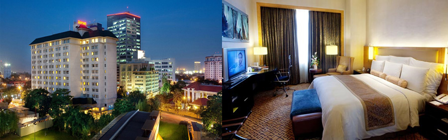

A minute's walk from the closest bus stop, this straightforward hotel is 3 km from the 16th-century Basilica del Santo Nino de Cebu and 4 km from downtown Cebu.
The streamlined rooms offer flat-screens, complimentary Wi-Fi and sitting areas. Upgraded rooms add extra beds and 24/7 room service. Kids age 12 and under stay at no charge.
Breakfast and parking are free. A relaxed cafe serves seafood dishes.
Address: M. J. Cuenco Ave, Cebu City, 6000 Cebu
Phone:(032) 266 755
P.1547 per night

Cebu City Marriott Hotel
This upscale hotel in the financial district is a 3-minute walk from a bus stop and 2 km from Museo Sugbo.
Modern rooms come with free Wi-Fi, flat-screen TVs and desks. They also feature sitting areas and minibars, along with tea and coffeemakers.
Room service is available.Upgraded rooms add access to a lounge offering free breakfast and snacks, while suites have living rooms with sofas.
There's a continental breakfast buffet (fee), which is served in a casual restaurant with panoramic garden views.
Other amenities include a gym, a spa and a modern cocktail lounge, plus an outdoor pool with a poolside bar.